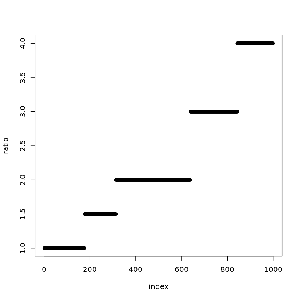

The R Notebook operation combines the capabilities of the
SparkR shell with
the rich selection of features the Jupyter
notebook offers. It provides users with a unique environment to explore their data sets.
R Notebooks allow the user to analyze their data by operating directly on the input DataFrame
by means of Apache Spark R API. The results of R code execution are presented immediately
and retained across user’s sessions. Due to their versatility, R Notebooks serve both as a way to
get familiarized with the data and as a record of completed research.
In order to use the R Notebook, the user has to drag and drop the operation onto the canvas and
connect a DataFrame to its input port. The connected DataFrame can
be accessed from within the R Notebook by calling the dataframe() function.
The user can start editing the code by clicking Open notebook in the R Notebook operation’s
parameters panel.
The variables and functions available in the operations’ global scope:
dataframe() - a function that returns the input DataFrame for this operation.
Everytime the input DataFrame changes, the dataframe() returns the updated DataFrame.
sc - Spark Context
spark - Spark Session
Since: Analytical Engine 1.3.0
head(dataframe())city beds baths sq_ft price
CityA 2 1 820 449178
CityC 2 1 656 267975
CityA 2 1 636 348946
CityA 2 1 736 356438
CityC 3 2 1139 473705
CityC 2 2 1074 458227
rdf = collect(dataframe())
bed.vector <- t(rdf[, 2])
bath.vector <- t(rdf[, 3])
ratio <- sort(bed.vector / bath.vector)
plot(1:length(ratio), ratio, xlab="index", ylab="ratio")
| Port | Type Qualifier | Description |
|---|---|---|
0 |
DataFrame |
The input DataFrame that can be accessed by calling dataframe(). |
The R Notebook operation does not produce any output.
| Name | Type | Description |
|---|---|---|
execute notebook
|
Boolean
|
If true then notebook code will be run on notebook
node execution. In batch mode notebook will never be executed,
no matter what parameter value will be.
|
send e-mail report
|
Boolean
|
Appears only if execute notebook = true.
If true then notebook result will be sent via e-mail.
Field with e-mail address must be filled.
|
e-mail address
|
String
|
Appears only if send e-mail report = true.
E-mail address where html with notebook execution result
should be sent to.
|